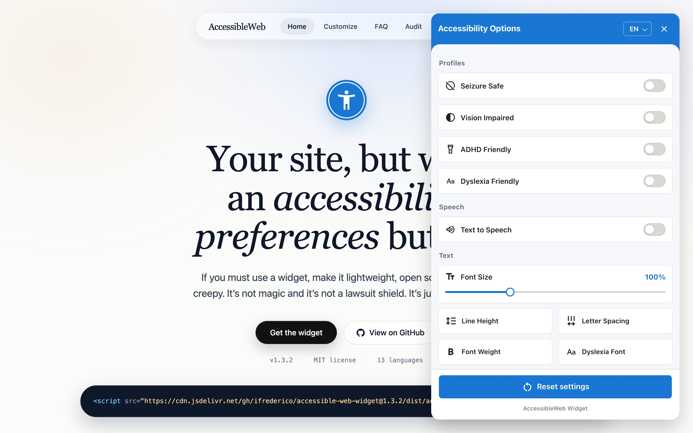

<script src="https://cdn.jsdelivr.net/gh/ifrederico/accessible-web-widget@1.3.5/dist/accessible-web-widget.min.js"></script>

Important: This widget provides user preference controls only (similar to browser
settings). It does not make your website accessible or ensure compliance with WCAG,
ADA, or other accessibility standards. Proper accessibility must be built into your website’s code.
Learn more: Overlay Factsheet
· Full Disclaimer
Available features
Controls people actually use.
Every option adjusts how a visitor experiences your pages — nothing more, nothing less.
Content adjustments
- Increase text size (3 levels)
- Bold text
- Adjust line spacing
- Adjust letter spacing
- Dyslexia-friendly font
- Hide images
Color adjustments
- Contrast (light/dark)
- Invert colors
- High saturation
- Low saturation
Navigation tools
- Highlight links
- Highlight headings
- Large cursor
- Reading guide
- Stop animations
Our stance
“Most accessibility overlays promise to magically fix your site. This isn’t that.”
We support the Overlay Factsheet.
Drop this into your HTML and you’re done.
One script tag. No account, no tracking, no invoice — ever.
Get the widget